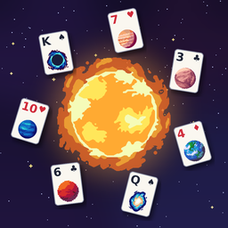

Privacy Policy
Solar System Solitaire · Effective October 20, 2026
The short version
- I don't ask for your name, email or any account, and I don't collect personal information myself.
- Your game progress is stored only on your device.
- The free version shows ads. The ad partners below collect some device and usage data to show and measure ads.
- Your advertising identifier is only shared if you allow tracking when the game asks.
Who this policy covers
Solar System Solitaire (the "app") is made by Jordan Overmyer, an independent developer ("I", "me"). This policy explains what information the app uses and why.
Information stored on your device
Your voyage progress, Daily Challenge history and streaks, unlocked ships, settings and a record of whether you bought Remove Ads are saved on your iPhone. This data isn't sent to me. Deleting the app deletes it.
Advertising
The free version shows banner, full-screen and optional rewarded ads through Unity LevelPlay, which includes Unity Ads and the ironSource Ads network (both operated by Unity Technologies). These partners may collect:
- Device information such as model, operating system version, language and screen size
- Your IP address and the approximate location it indicates (country or region)
- Information about the ads you see and tap, and how you use the app around those ads
- Your device's advertising identifier (IDFA), only if you allow tracking when the app asks
They use this to show ads, limit how often you see the same ad, measure ad performance, prevent fraud and, if you allow tracking, show ads more relevant to you. How they handle this data is described in Unity's Game Player and App User Privacy Policy.
If you buy Remove Ads, the app stops showing banner and full-screen ads. You can still choose to watch a rewarded ad, for example for extra fuel.
Your tracking choice
The first time ads load, iOS asks whether the app may track your activity. If you choose Ask App Not to Track, your advertising identifier is not shared and you'll see less personalized ads. You can change this at any time in your iPhone's Settings › Privacy & Security › Tracking.
Purchases
The Remove Ads purchase is handled entirely by Apple. I don't receive your payment details. The app only receives confirmation from the App Store that the purchase was made.
Game Center
If you're signed in to Game Center, your scores are sent to Apple's Game Center leaderboards, where other players can see them alongside your Game Center nickname. Game Center is run by Apple under Apple's Privacy Policy. You can sign out under Settings › Game Center.
Children
The app is a general-audience card game and isn't directed at children under 13. I don't knowingly collect personal information from children. If you believe a child's information has been collected through the ads in this app, contact me and I'll help get it removed.
Your rights
Depending on where you live (for example the EU, UK or California), you may have the right to access, delete or opt out of the sale or sharing of personal information. Because I don't hold personal information about you, requests about ad data are handled by Unity. You can make them through Unity's privacy policy linked above, or contact me and I'll help.
Changes
If this policy changes, I'll update it here and change the effective date at the top.